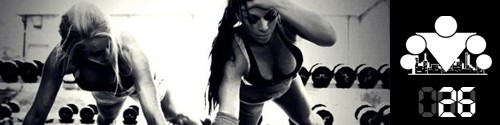
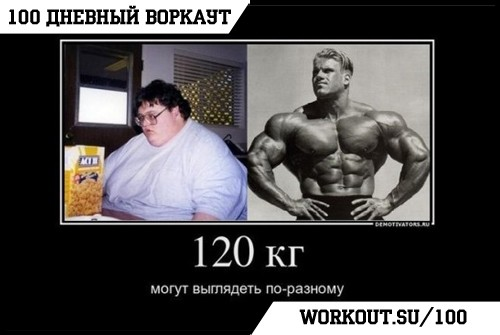
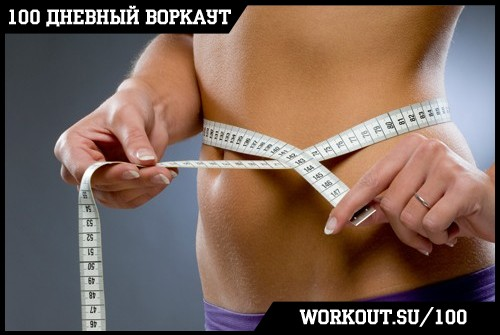
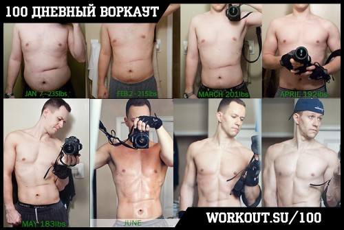

100 Дневный воркаут
<==== Вернуться к оглавлению
День 26. Секрет успеха в тренировках

Для достижения успеха в чём бы то ни было, нужно сделать всего 4 вещи:
* Определить цели
* Составить план
* Начать действовать
* Контролировать прогресс
И если свои цели мы уже определили, план составили и теперь активно занимаемся его претворением в жизнь, то о вопросе контроля своего прогресса мы поговорим в сегодняшнем инфо-посте.
Почему это важно?
Если вы поставили перед собой какую-либо цель, будь то набрать мышечную массу или сбросить лишние килограммы, поднять количество повторений в каком-либо упражнении и т.п., то вам необходимо понимать, становитесь ли вы ближе в к своей цели в конце дня или нет. Кроме того, полезно было бы узнать что лично для вас работает эффективно, а что не работает вообще. Можно тренироваться инстинктивно, но если вы только начинаете свой путь в воркауте, то я бы рекомендовал вам завести так называемый дневник прогресса, куда вы будете заносить время от времени различные данные.
Есть три основных способах мониторинга своего прогресса с течением времени: измерение веса, измерение объёмов и фотографии (как вариант - видео).
Измерение веса

Самым простым, самым популярным способом измерения своего прогресса является измерение веса. К сожалению большинство людей неправильно подходят к этому процессу и ошибочно трактуют получаемые результаты!
Я ещё детально коснусь вопросов диеты и регулировки питания во время второй недели программы, а на данный момент хочу, чтобы вы запомнили одну главную вещь -
вес - это всего лишь показатель, который может быть очень далёк от демонстрации реальных результатов
. Сравните фотографии двух людей, приведённые выше. У них одинаковый вес - 120 килограмм, но выглядят они совершенно по-разному! Ну а теперь мой вопрос - что для вас важнее - цифорки, которые показывают весы или реальный результат?
Измерение объемов

Следующим популярным способом измерения прогресса является измерения объемов различных частей тела. Чаще всего объектами измерения становятся обхваты грудной клетки, талии, бедер, бицепса и плечевого пояса. В отношении жира самым полезным показателем является объём талии, так как при его уменьшении скорее всего вы теряете жир, а при увеличении - набираете. В интернете можно найти несколько методик определения "идеальных" объемов и пропорций.
В принципе данный способ является гораздо более показательным для оценки прогресса. Если ваша цель набор массы и ваши объёмы растут, то нет смысла ничего менять на данном этапе. А вот если вы вышли на плато и держитесь на нём уже месяц, то стоит увеличить количество потребляемых калорий.
Выше я писал про "идеальные" объемы и пропорции, и я не просто так заключил слово в кавычки. Дело не только в том, что все люди уникальны, но так же и в том, что у каждого есть свои представления об идеалах. Наверняка и у вас тоже есть некое видение идеального себя, верно? И с помощью упорных тренировок вы хотите добиться соответствия себя настоящего этому идеалу. Но можете ли вы сходу назвать какие должны быть объёмы мышц у вашего идеала? Бьюсь об заклад, что скорее всего нет.
Измерение объемов - неплохой способ анализа текущего прогресса, но в долгосрочной перспективе вам нужно что-то более осязаемое.
Так же следует добавить, что нет смысла измерять объёмы слишком часто, вполне будет достаточно одного раза в месяц.
Фотографии

И вот мы подобрались к моему самому любимому способу измерения прогресса. Почему самому любимому? Потому что, на мой взгляд, этот способ - самый честный (здесь главное не пытаться ничего изображать и напрягать специально мышцы, фотографии должны быть сделаны в расслабленном состоянии и при хорошем освещении, иначе вы просто обманываете сами себя).
Лучше всего делать фотографии со штатива, на одном и том же месте при одном и том же освещении и с разных ракурсов. Таким образом вы сможете получить максимально объективные изображения себя, а это важно, для того, чтобы иметь возможность оценить именно свой прогресс, а не удачно наложившуюся тень.
Если есть возможность помимо фотографий записывать видео - просто превосходно! Записывайте на видео себя (вот здесь уже можно пробовать позировать как бодибилдеры, напрягая различные мышцы), записывайте свою технику выполнения упражнений, записывайте всё, что покажется вам важным и в чём вы хотите достичь прогресса! Видео в данном случае будет неоценимым источником информации, взглядом со стороны, который даёт объективную оценку!
Силовые показатели
Последним пунктом в нашем списке будет отслеживание прогресса по силовым показателям. Конечно, воркаут не относится к числу тех дисциплин, где гонятся за количеством повторений (в нашем случае, количество - это следствие, а не самоцель), но тем не менее этот параметр так же можно использовать для контроля своего прогресса.
Во-первых, если вы раньше делали 10 повторений с отличным качеством, а сейчас делаете 20 с тем же качеством, то, очевидно, вы стали сильнее.
Во-вторых, если вы раньше не могли делать выход силой на турнике, а сейчас можете, то, тоже очевидно, вы стали сильнее.
В-третьих, если вы раньше могли делать 10 подтягиваний с собственным весом, а теперь 10 с жилетом-утяжелителем в полной загрузке, то вы так же стали сильнее.
На небольшом отрезке времени может показаться, что ваши силовые стоят на месте или не растут так быстро, как бы вам этого хотелось. Поэтому я повторюсь ещё раз - само по себе количество повторений не имеет значения и НИКОГДА не должно становиться вашей целью. Продолжайте работать над собой и по мере обретения силы, количество повторений так же будет расти. Если вы все делаете правильно, то оглянувшись на год назад обязательно увидите, какой большой путь вам удалось пройти за это время.
Конечно, с силовыми показателями и элементами не все так просто, потому что они не только отражают вашу силу, но так же и показывают то, насколько хорошо вы адаптировались к существующей нагрузке (а чем лучше вы к ней адаптированы, тем менее эффективны ваши тренировки). Об этом тоже нужно помнить.
Вместо заключения
Есть поговорка, что когда вы начинаете заниматься воркаутом, то через 12 недель вы заметите результат, через 24 недели ваши изменения заметят близкие, через 36 недель друзья и знакомые, ну а через 48 недель весь мир! В принципе, эти цифры близки к истине, поэтому я бы рекомендовал делать фотографии не чаще, чем раз в месяц.
======> День 27. Результаты тренировок: желаемые и достижимые